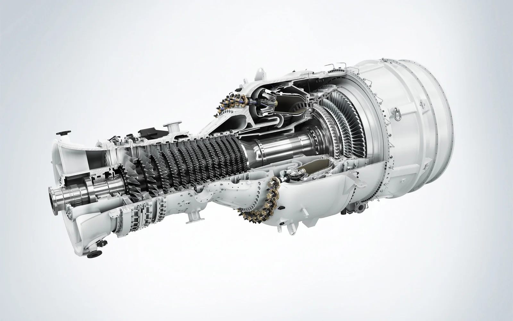

Image : Siemens Energy01 · Stagiaire en IA & Data Science · sept. – nov. 2026 En cours
Jumeau numérique
Le double numérique d'un système de production électrique, pour comprendre son comportement et simuler des scénarios avant qu'ils n'arrivent.
Chez Kékéli Efficient Power, à Lomé, j'analyse et modélise le fonctionnement d'un système industriel complexe, j'exploite et structure les données qu'il produit, puis je conçois des modèles numériques qui reproduisent son comportement. Ils servent à simuler différents scénarios opérationnels et perturbations.
- Jumeau numérique
- Modélisation numérique
- Simulation de scénarios
- Data Science
- IA

 PostgreSQL
PostgreSQL FastAPI
FastAPI React
React
 PyTorch
PyTorch Python
Python